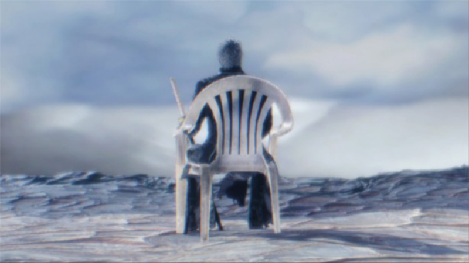

ACERCA DE
Vergil es el mayor de los hijos gemelos de Sparda y Eva. Es el principal antagonista de Devil May Cry 3: Dante's Awakening. Después que su madre falleciera, tanto él como Dante tomaron diferentes caminos. A diferencia de su hermano, Vergil abandonó su humanidad y aceptó su herencia demoníaca, comenzando así una búsqueda del poder de su padre.
Tras ser derrotado por Dante, cae a las profundidades del Inframundo y se encuentra con Mundus, teniendo un combate en el cual es derrotado y termina siendo manipulado por el Príncipe de la Oscuridad bajo nombre de Nelo Angelo.

Años más tarde, después que Dante derrotara a Nelo Angelo, Vergil sobrevive y ahora está libre del control de Mundus, sin embargo, está debilitado. Reaparece como alguien encapuchado para recuperar Yamato, quitando el Devil Bringer a su hijo, ahora bajo una apariencia demoníaca y con su seudónimo Urizen es revelado como el antagonista principal de Devil May Cry 5.
En contraste a su hermano Dante quien es extrovertido y energético, Vergil es de carácter serio, calmado y frío. Por lo general no le importan otros o su entorno más allá de sus propios objetivos. A diferencia de su hermano quien trata de negar su herencia demoníaca, él esta orgulloso de ser hijo del Legendario Caballero Oscuro, anhelando su poder y convertirse en un verdadero demonio. Aunque ame a su madre Eva y no desprecie a los humanos, siente que su herencia humana lo hace incompleto y débil. Su código de guerrero le impide utilizar armas de fuego ya que las considera indignas y muy poco elegantes en un combate, razón por la que solo utiliza armas que dependan de su propia habilidad. Se dice que es un guerrero honorable, pero su ética moral es cuestionable ya que más de una vez trato de eliminar a sus enemigos desprevenidos.
Devil trigger